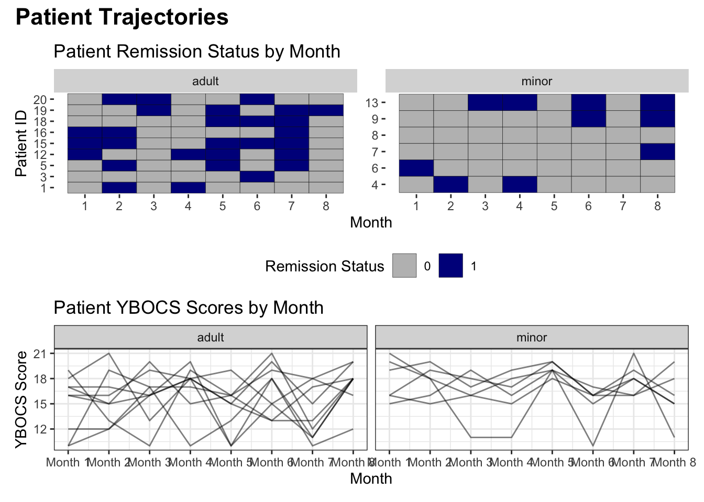
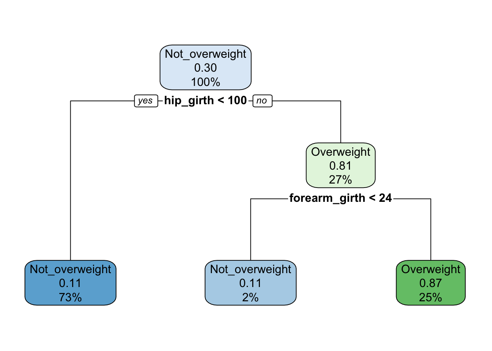

R Code Samples
Allison Holmes
04/17/2023
Datasets
Biometrics Dataset: contains nine skeletal measurements and twelve girth measurements along with age, weight, height, and gender.
Cancer Dataset: contains data on tumor types and hypermethylation genes
Compliance Dataset: dataset of treatment compliance for a 10-week study on physical activity and cognitive functioning.
OCD Dataset: dataset of a small observational study on OCD. Patients were measured using the YBOCS scale over eight months.
NYC COVID-19 Dataset: US State-level COVID-19 dataset from the New York Times data portal.
# Biometrics dataset
biometrics_raw <- read_excel('Datasets/biometrics.xls', sheet = 2)
# Cancer dataset
cancer <- read_csv('Datasets/cancer_genes.csv', skip = 2) %>%
drop_na(hyper_methylation)
# Compliance dataset
compliance <- read_csv('Datasets/activity_compliance.csv') %>%
mutate(compliant = if_else(is.na(compliant), 0, compliant))
# OCD dataset
ocd_longitudinal <- read_csv('Datasets/ocd_longitudinal.csv')
ocd_demos <- read_csv('Datasets/ocd_demos.csv')
# COVID-19 dataset
covid_raw <- read_csv("https://raw.githubusercontent.com/nytimes/covid-19-data/master/us-states.csv")Data Manipulation
Filter and create new variables
# biometrics dataset manipulation
biometrics_girth <- biometrics_raw %>%
# filter to selected variables - demography and all girth measurements
select(id, height, weight, gender, contains("girth")) %>%
# create new calculated variables
mutate(bmi = round(weight/(height/100)^2,1)) %>% #BMI
mutate(navel_thigh_girth = navel_girth + thigh_girth) %>% # combined navel, thigh girth
# create categorical variable for BMI
mutate(bmi_cat = case_when(bmi < 18.5 ~ "Underweight",
bmi >=18.5 & bmi < 25 ~ "Normal",
bmi >=25 & bmi < 30 ~ "Overweight",
bmi >= 30 ~ "Obese")) %>%
# factor categorical variables
mutate(bmi_fac = factor(bmi_cat, levels = c("Underweight","Normal", "Overweight",
"Obese")))Summarize data
# compliance dataset summarization of proportion by week:
proportion_by_week <- compliance %>%
group_by(week, compliant) %>%
summarize(n = n()) %>%
mutate(compliance_proportion = n / sum(n),
sd = sd(compliance_proportion),
se = sd/(sqrt(n)),
lower_ci = compliance_proportion - (1.96*se),
upper_ci = compliance_proportion + (1.96*se)) %>%
filter(compliant == 1) %>%
select(week, compliance_proportion, lower_ci, upper_ci)
# print results
kable(proportion_by_week)| week | compliance_proportion | lower_ci | upper_ci |
|---|---|---|---|
| 1 | 0.8000000 | 0.6799750 | 0.9200250 |
| 2 | 0.7500000 | 0.6466989 | 0.8533011 |
| 3 | 0.6500000 | 0.5834221 | 0.7165779 |
| 4 | 0.7500000 | 0.6466989 | 0.8533011 |
| 5 | 0.5666667 | 0.5349753 | 0.5983580 |
| 6 | 0.5166667 | 0.5083693 | 0.5249640 |
| 7 | 0.4666667 | 0.4492056 | 0.4841277 |
| 8 | 0.6666667 | 0.5936218 | 0.7397116 |
| 9 | 0.6166667 | 0.5635027 | 0.6698306 |
| 10 | 0.5166667 | 0.5083693 | 0.5249640 |
Joins
# inner join OCD dataset
ocd <- inner_join(ocd_longitudinal, ocd_demos, by = "study_id")Pivot data and String manipulation
# pivot ocd dataset longer
ocd_long <- ocd %>%
pivot_longer(cols = starts_with("ybocs"),
names_to = "month",
values_to = "ybocs_score",
names_transform = list("month" = function(str){
step1 <- str_remove(str, "ybocs_m") # remove prefix
step2 <- as.numeric(step1) # code month as numeric
return(step2)
})) %>%
# create remission variable
mutate(remission = if_else(ybocs_score <= 15, "1", "0")) %>%
# factor remission variable and study_id for visualization
arrange(study_id) %>%
mutate(study_id = factor(study_id, levels = unique(study_id)),
rem_fac = factor(remission, levels = c(0, 1))) %>%
# create age categorical variable
mutate(age_cat = if_else(age < 18, "minor", "adult"))Statistical Analysis
T test
# example t-test between ankle diameter measure and gender
# unequal variance
ankle_res <- t.test(ankle_diameter ~ gender, data = biometrics_raw)
# pull results to objects
t_stat <- ankle_res$statistic # t statistic
df <- ankle_res$parameter # degrees of freedom
p_val <- ankle_res$p.value # p-value
ci_lower <- ankle_res$conf.int[1] # 95% confidence interval
ci_upper <- ankle_res$conf.int[2]
# create tibble of results and print
ankle_res_tidy <- tidy(ankle_res)
kable(ankle_res_tidy)| estimate | estimate1 | estimate2 | statistic | p.value | parameter | conf.low | conf.high | method | alternative |
|---|---|---|---|---|---|---|---|---|---|
| -1.717591 | 13.02654 | 14.74413 | -21.3131 | 0 | 495.6447 | -1.875928 | -1.559254 | Welch Two Sample t-test | two.sided |
# interpret using in-line codeInterpretation: At the 5% level of significance, we reject the null hypothesis that there is no mean difference in ankle diameter between gender groups (t=-21.31, df=495.64, p<0.0001). We are 95% confident that the true mean difference in ankle diameter between females and males lies between -1.88 and -1.56.
Permutation Test (and function writing)
# create a function to calculate the test statistic
calculate_ts <- function(df){
summary <- df %>%
group_by(gender) %>%
summarize(mean_ank = mean(ankle_diameter))
female_ank <- summary %>%
filter(gender == "Female") %>%
pull(mean_ank)
male_ank <- summary %>%
filter(gender == "Male") %>%
pull(mean_ank)
difference <- female_ank - male_ank
return(difference)
}
# calculate observed test statistic with function
obs_stat <- calculate_ts(biometrics_raw)
# create a function to perform a single permutation
perform_permutation <- function(df){
permuted <- df %>%
mutate(gender = sample(gender)) # performs a permutation with sample()
return(permuted)
}
# combine functions
get_permutation_ts <- function(df){
permed <- perform_permutation(df)
ts <- calculate_ts(permed)
return(ts)
}
# simulate 2000 test statistics with map function
results <- map_dbl(1:2000, function(x) get_permutation_ts(biometrics_raw))
# put results into a tibble
perm_results <- tibble(sim_stat = results)
# calculate p-value - proportion of simulated test statistics whose absolute value is greater than or equal to the observed test statistic
perm_pval <- perm_results %>%
mutate(abs_val_greater = if_else(abs(sim_stat) >= abs(obs_stat), 1, 0)) %>%
group_by(abs_val_greater) %>%
summarize(n_obs = n()) %>%
mutate(proportion = n_obs/sum(n_obs)) %>%
filter(abs_val_greater == 1) %>%
pull(proportion)
# create histogram comparing permuted test statistics to the observed difference in means
ggplot(data = perm_results) +
geom_histogram(aes(x = sim_stat), fill = "darkgrey", color = "white") +
geom_vline(aes(xintercept = obs_stat), color = "red", linetype = "dashed") +
theme_bw() +
labs(x = "Simulated Test Statistics", y = "Count") +
annotate(geom = "text", x = -0.8, y = 410, label = "Observed Test Statistic = -1.72", color = "red")
Interpretation: At the 5% level of significance, we reject the null hypothesis that there is no mean difference in ankle diameter between gender groups (p<0.0001).
Regression
# create binary outcomes overweight and obese for logistic regression
biometrics_log <- biometrics_raw %>%
mutate(bmi = round(weight/(height/100)^2,1)) %>%
mutate(overweight = if_else(bmi >=25, 1, 0),
obese = if_else(bmi >=30, 1, 0))
### COVARIATE EXPLORATION ###
# overweight outcome, thigh girth predictor, adjusted for gender
thigh_overweight <- glm(overweight ~ thigh_girth + gender, family = "binomial",
data = biometrics_log)
# obese outcome, thigh girth predictor, adjusted for gender
thigh_obese <- glm(obese ~ thigh_girth + gender, family = "binomial",
data = biometrics_log)
# overweight outcome, wrist girth predictor, adjusted for gender
wrist_overweight <- glm(overweight ~ wrist_girth + gender, family = "binomial",
data = biometrics_log)
# obese outcome, wrist girth predictor, adjusted for gender
wrist_obese <- glm(obese ~ wrist_girth + gender, family = "binomial",
data = biometrics_log)
# overweight outcome, waist girth predictor, adjusted for gender
waist_overweight <- glm(overweight ~ waist_girth + gender, family = "binomial",
data = biometrics_log)
# obese outcome, waist girth predictor, adjusted for gender
waist_obese <- glm(obese ~ waist_girth + gender, family = "binomial",
data = biometrics_log)
tbl_regression(waist_obese, exponentiate = TRUE)| Characteristic | OR1 | 95% CI1 | p-value |
|---|---|---|---|
| waist_girth | 1.30 | 1.21, 1.43 | <0.001 |
| gender | |||
| Female | — | — | |
| Male | 0.02 | 0.00, 0.11 | <0.001 |
| 1 OR = Odds Ratio, CI = Confidence Interval | |||
# exploratory results visualized in FOREST PLOTExample Interpretation: At the 5% level of significance, we reject the null hypothesis that there is no significant difference in waist girth between those who are obese (BMI>=30) and those who are not obese (p=<0.001). For every 1cm increase in waist girth, the odds of being obese increases by a factor of 1.30 on average, adjusting for gender.
### MULTIVARIATE LOGISTIC MODEL ###
mult_obese <- glm(obese ~ waist_girth + wrist_girth + thigh_girth + gender,
family = "binomial", data = biometrics_log)
tbl_regression(mult_obese, exponentiate = TRUE)| Characteristic | OR1 | 95% CI1 | p-value |
|---|---|---|---|
| waist_girth | 1.31 | 1.19, 1.49 | <0.001 |
| wrist_girth | 0.94 | 0.43, 2.04 | 0.9 |
| thigh_girth | 1.32 | 1.15, 1.56 | <0.001 |
| gender | |||
| Female | — | — | |
| Male | 0.04 | 0.00, 0.37 | 0.006 |
| 1 OR = Odds Ratio, CI = Confidence Interval | |||
Visualizations
Histograms
# graph of distribution of combined navel and thigh girth variable
ggplot(data = biometrics_girth) +
geom_histogram(aes(x = navel_thigh_girth), color = "white", fill='darkgrey') +
theme_bw() +
labs(title = "Distribution of Combined Navel and Thigh Girth", x = "Navel and Thigh Girth", y = "Count")Boxplots
# distribution of combined navel and thigh girth variable, divided by gender
ggplot(data = biometrics_girth) +
geom_boxplot(aes(y = navel_thigh_girth, x = gender), fill='darkgrey') +
theme_bw() +
labs(title = "Distribution of Combined Navel and Thigh Girth",
y = "Navel and Thigh Girth", x = "Gender")Scatterplots
# exploratory scatterplot for the relationship between continuous BMI and navel+thigh combined girth variable
ggplot(data = biometrics_girth) +
# scatterplot
geom_point(aes(x = bmi, y = navel_thigh_girth)) +
# linear best fit line
geom_smooth(aes(x = bmi, y = navel_thigh_girth), method = 'lm', se = FALSE,
color = 'red') +
labs(title = "Relationship between BMI and Combined Navel and Thigh Girth",
y = "Navel and Thigh Girth", x = "BMI") +
theme_bw()# faceted scatterplots of BMI and navel+thigh combined girth by BMI category and gender
ggplot(data = biometrics_girth) +
geom_point(aes(x = bmi, y = navel_thigh_girth)) +
geom_smooth(aes(x = bmi, y = navel_thigh_girth), method = 'lm', se = FALSE,
color = 'red') +
facet_grid(bmi_fac~gender) +
theme_bw() +
labs(title = "Relationship between BMI and Combined Navel and Thigh Girth,", subtitle= "by BMI category and gender", y = "Combined Navel and Thigh Girth", x = "BMI")Heatmaps
# heatmap of tumor types and genes, with color indicating severity of hypermethylation in cancer dataset
ggplot(data = cancer) +
geom_tile(aes(y = tumor_type, x = gene, fill = hyper_methylation)) +
labs(y = "Tumor Type", x = "Gene", fill = "Hyper Methylation", title = "Hyper Methylation Values by Tumor Type and Gene") +
theme(axis.text.x = element_text(angle = 90)) +
scale_fill_gradient(high = "darkred", low = "white")Spaghetti Plots
# spaghetti plot showing YBOCS scores over time for all individuals in OCD dataset
ggplot(data = ocd_long) +
geom_line(aes(x = month, y = ybocs_score, group = study_id), alpha=0.5) +
theme_bw() +
labs(x = "Month", y = "YBOCS Score", title = "Patient YBOCS Scores by Month") +
scale_x_continuous(breaks = 1:8, labels = scales::label_number(prefix = "Month "))Lasagna Plots
# plot showing the binary remission variable over time for each individual, factored by minor status
ggplot(data = ocd_long) +
geom_tile(aes(x = month, y = study_id, fill = rem_fac), color = "black") +
labs(x = "Month", y = "Patient ID", title = "Patient Remission Status by Month",
fill = "Remission Status") +
theme(legend.position = "bottom",
panel.background = element_rect(fill="white")) +
scale_x_continuous(breaks = 1:8) +
scale_fill_manual(values = c("grey", "darkblue")) +
facet_wrap(~age_cat, scales = "free")
Forest Plots
# visualize exploratory variable Odds Radios from logistic regressions with biometrics dataset
# put ORs and CIs into dataframes, create outcome variable
OR_thigh_overweight <- tidy(thigh_overweight, exponentiate = TRUE, conf.int = TRUE) %>%
mutate(outcome = "overweight")
OR_thigh_obese <- tidy(thigh_obese, exponentiate = TRUE, conf.int = TRUE) %>%
mutate(outcome = "obese")
OR_wrist_overweight <- tidy(wrist_overweight, exponentiate = TRUE, conf.int = TRUE) %>%
mutate(outcome = "overweight")
OR_wrist_obese <- tidy(wrist_obese, exponentiate = TRUE, conf.int = TRUE) %>%
mutate(outcome = "obese")
OR_waist_overweight <- tidy(waist_overweight, exponentiate = TRUE, conf.int = TRUE) %>%
mutate(outcome = "overweight")
OR_waist_obese <- tidy(waist_obese, exponentiate = TRUE, conf.int = TRUE) %>%
mutate(outcome = "obese")
# combine OR dataframes to plot
all_ORs <- OR_thigh_overweight %>%
bind_rows(OR_thigh_obese) %>%
bind_rows(OR_wrist_overweight) %>%
bind_rows(OR_wrist_obese) %>%
bind_rows(OR_waist_overweight) %>%
bind_rows(OR_waist_obese) %>%
# filter to only predictors of interest
filter(str_detect(term, "girth")) %>%
# labels for plot
mutate(term_lab = str_remove(term, "_girth")) %>%
mutate(outcome_lab = if_else(outcome == "obese",
"Obese (BMI>=30)", "Overweight (BMI>=25)"))
# create forest plot summary of ORs
ggplot(data = all_ORs) +
geom_point(aes(x = estimate, y = term_lab)) +
geom_errorbar(aes(xmin = conf.low, xmax = conf.high, y = term_lab), width = 0.2) +
# width to change width of error bars
facet_wrap(~outcome_lab, ncol = 1) +
labs(x = "Odds Ratio", y = "Girth (cm)") +
geom_vline(aes(xintercept = 1.0), linetype = "dashed") +
scale_x_continuous(breaks = seq(from=0.0, to=5.0, by=0.5), limits = c(0,5)) +
theme_bw()
Custom/Mixed Plots
# shows the proportion of compliant individuals and 95% confidence interval per week over target compliance rate from compliance dataset
ggplot(data = proportion_by_week) +
geom_pointrange(aes(x = week, y = compliance_proportion, ymax = upper_ci, ymin = lower_ci)) +
geom_line(aes(x = week, y = compliance_proportion), linetype = "dotted") +
geom_hline(aes(yintercept = 0.65), color = "darkblue", linetype = "dashed") +
theme_bw() +
labs(title = "Observed Proportion of Compliant Individuals by Week",
x = "Week", y = "Proportion") +
scale_x_continuous(breaks = 1:10, labels = paste("Week", 1:10)) +
scale_y_continuous(limits = 0:1) +
annotate(geom = "text", x = 8, y = 0.9, label = "Target Compliance = 0.65",
color = "darkblue")# patchwork plot showing patient trajectories over time, faceted by minor status from OCD dataset
lasagna <- ggplot(data = ocd_long) +
geom_tile(aes(x = month, y = study_id, fill = rem_fac), color = "black") +
labs(x = "Month", y = "Patient ID", title = "Patient Remission Status by Month",
fill = "Remission Status") +
theme(legend.position = "bottom",
panel.background = element_rect(fill="white")) +
scale_x_continuous(breaks = 1:8) +
scale_fill_manual(values = c("grey", "darkblue")) +
facet_wrap(~age_cat, scales = "free")
spaghetti <- ggplot(data = ocd_long) +
geom_line(aes(x = month, y = ybocs_score, group = study_id), alpha=0.5) +
theme_bw() +
labs(x = "Month", y = "YBOCS Score", title = "Patient YBOCS Scores by Month") +
scale_x_continuous(breaks = 1:8, labels = scales::label_number(prefix = "Month ")) +
facet_wrap(~age_cat)
lasagna / spaghetti +
plot_annotation(title = "Patient Trajectories",
theme = theme(plot.title = element_text(size=rel(1.5), face="bold")))
Descriptive Tables
# labeled table presenting mean, standard deviation, minimum, median, maximum, p-value of t-test of continuous variables, split by gender
biometrics_raw %>%
select(gender, contains("girth")) %>%
tbl_summary(by = gender,
statistic = all_continuous() ~ "{mean} ({sd}), {min} {median} {max}",
label = list(shoulder_girth ~ "Shoulder Girth",
chest_girth ~ "Chest Girth",
waist_girth ~ "Waist Girth",
navel_girth ~ "Navel Girth",
hip_girth ~ "Hip Girth",
thigh_girth ~ "Thigh Girth",
bicep_girth_flexed ~ "Flexed Bicep Girth",
forearm_girth ~ "Forearm Girth",
knee_girth ~ "Knee Girth",
calf_girth ~ "Calf Girth",
ankle_girth ~ "Ankle Girth",
wrist_girth ~ "Wrist Girth")) %>%
add_p(test = all_continuous() ~ "t.test",
test.args = all_tests("t.test") ~ list(var.equal = TRUE))| Characteristic | Female, N = 2601 | Male, N = 2471 | p-value2 |
|---|---|---|---|
| Shoulder Girth | 100 (6), 86 100 130 | 117 (6), 100 116 135 | <0.001 |
| Chest Girth | 86 (6), 73 86 109 | 101 (7), 79 101 119 | <0.001 |
| Waist Girth | 70 (8), 58 68 102 | 85 (9), 67 83 113 | <0.001 |
| Navel Girth | 84 (10), 64 82 121 | 88 (8), 67 87 112 | <0.001 |
| Hip Girth | 96 (7), 79 95 128 | 98 (6), 82 97 119 | <0.001 |
| Thigh Girth | 57.2 (4.6), 46.3 56.4 75.7 | 56.5 (4.2), 46.8 56.0 70.0 | 0.078 |
| Flexed Bicep Girth | 28.1 (2.7), 22.4 27.8 40.3 | 34.4 (3.0), 25.6 34.4 42.4 | <0.001 |
| Forearm Girth | 23.76 (1.68), 19.60 23.60 30.80 | 28.24 (1.78), 22.70 28.40 32.50 | <0.001 |
| Knee Girth | 35.26 (2.58), 29.00 35.00 49.00 | 37.20 (2.27), 31.10 37.00 45.70 | <0.001 |
| Calf Girth | 35.01 (2.61), 28.40 34.85 45.40 | 37.21 (2.65), 28.90 37.30 47.70 | <0.001 |
| Ankle Girth | 21.21 (1.44), 17.40 21.10 26.00 | 23.16 (1.73), 16.40 23.00 29.30 | <0.001 |
| Wrist Girth | 15.06 (0.85), 13.00 15.00 18.20 | 17.19 (0.91), 14.60 17.10 19.60 | <0.001 |
| 1 Mean (SD), Minimum Median Maximum | |||
| 2 Two Sample t-test | |||
Machine Learning
Bootstrapping
# Obtain 95% confidence interval around a mean using standard SE formula
# Get mean of new COVID-19 deaths in NYC in 2022
ny_covid22 <- covid_raw %>%
# filter to NY
filter(state == "New York") %>%
arrange(date) %>%
# calculate new deaths
mutate(new_deaths = deaths - lag(deaths)) %>%
# filter to dates in year 2022
filter(date >= "2022-01-01")
mean_nd <- ny_covid22 %>%
pull(new_deaths) %>%
mean()
standard_ci <- ny_covid22 %>%
summarize(mean_nd = mean(new_deaths),
total_n = n(),
se = sd(new_deaths)/sqrt(total_n),
lower_ci = mean_nd - 1.96*se,
upper_ci = mean_nd + 1.96*se) %>%
mutate(pretty_ci = str_c(round(mean_nd,2), " (", round(lower_ci,2), ", ", round(upper_ci,2), ")"))
ci_out <- standard_ci %>%
pull(pretty_ci)The mean number and 95% confidence interval of daily new COVID-19 deaths reported in New York since 01/01/2022 is 47.24 (30, 64.47).
# Obtain 95% confidence interval around a mean using bootstrapping
# create functions
get_mean <- function(df){
mean <- df %>%
pull(new_deaths) %>%
mean()
return(mean)
}
create_bootstrap <- function(df){
boot <- df %>%
slice_sample(prop = 1, replace = TRUE) # pull sample the same size as original
return(boot)
}
# combine functions
mean_bootstrap <- function(df){
boot_m <- create_bootstrap(df) %>%
get_mean()
return(boot_m)
}
# get boostrapped results and put into a tibble
boot_res <- map_dbl(1:2000, function(x) mean_bootstrap(ny_covid22))
res_tibble <- tibble(run = 1:2000, mean = boot_res)
# get boostrapped confidence interval with quantiles
boot_ci <- res_tibble %>%
summarize(lower_ci = quantile(mean, 0.025),
upper_ci = quantile(mean, 0.975))
# plot the distribution of boostrapped data
ggplot(data = res_tibble) +
geom_histogram(aes(x = mean), color = "white", fill = "darkgrey") +
theme_bw() +
labs(title = "Bootstrapped Distribution")The bootstrapped 95% CI for number of new deaths reported in New York from 01/01/22 onward is 34.533557, 66.3423937.
Predictive Model Building
Using k-fold cross validation, CART modeling, and logistic regression modeling
# Step 1: Split data into training and test sets
biometrics_pred <- biometrics_log %>%
# factor outcome and gender
mutate(gender_fac = factor(gender, levels = c('Female', 'Male')),
wt = if_else(overweight == 0, 'Not_overweight', 'Overweight'),
wt_fac = factor(wt, levels = c('Not_overweight', 'Overweight'))) %>%
# remove variables
select(-id, -obese, -overweight, -age, -weight, -wt, -height, -bmi, -gender)
# check distribution of outcome overweight in total dataset
biometrics_pred %>%
group_by(wt_fac) %>%
summarize(n = n()) %>%
mutate(proportion = n / sum(n))## # A tibble: 2 × 3
## wt_fac n proportion
## <fct> <int> <dbl>
## 1 Not_overweight 357 0.704
## 2 Overweight 150 0.296#split data, 75% training
split_data <- initial_split(biometrics_pred, prop = 0.75, strata = wt_fac)
# stratify so proportion of outcome is the same between training/test
train_dat <- training(split_data)
test_dat <- testing(split_data)
# Check that distribution of outcome is similar to total dataset in training and test sets
train_dat %>%
group_by(wt_fac) %>%
summarize(n = n()) %>%
mutate(proportion = n / sum(n))## # A tibble: 2 × 3
## wt_fac n proportion
## <fct> <int> <dbl>
## 1 Not_overweight 267 0.704
## 2 Overweight 112 0.296test_dat %>%
group_by(wt_fac) %>%
summarize(n = n()) %>%
mutate(proportion = n / sum(n))## # A tibble: 2 × 3
## wt_fac n proportion
## <fct> <int> <dbl>
## 1 Not_overweight 90 0.703
## 2 Overweight 38 0.297The distribution of outcome (overweight) in the training and test data appears equal.
logistic_mod <- train(
form = wt_fac ~ ., # formula
data = train_dat, # training data
trControl = trainControl(method = "cv", # cross-validation
number = 10, # 10-fold
summaryFunction = twoClassSummary, # obtain ROC
classProbs = TRUE, # obtain ROC
savePredictions = "final"), # plot ROC/AUC
metric = "ROC", # use ROC/AUC
method = "glm", # glm function
family = "binomial" # logistic regression
)The 10-fold cross-validated ROC/AUC (10-fold) of this model on the training dataset is 0.968839.
## tune based on ROC/AUC
class_tree <- train(
form = wt_fac ~ ., # formula
data = train_dat, # training data
method = "rpart", # CART
trControl = trainControl(method = "cv", # cross validation
number = 10, # 10-fold
summaryFunction = twoClassSummary, # obtain ROC
classProbs = TRUE, # obtain ROC
savePredictions = "final"), # save for plotting ROC/AUC
metric = "ROC" # use ROC/AUC
)
# cross-validated model ROC/AUC vs different complexity parameters
plot(class_tree)The best reported ROC/AUC value to maximize performance is 0.0491071.
# plot final model
rpart.plot(class_tree$finalModel)
# compare cross-validated ROC/AUC of logistic and CART to see which model is best
compare_mods <- resamples(list("Logistic"=logistic_mod,
"CART" = class_tree))
dotplot(compare_mods, metric = "ROC")
The logistic model performs better on the training data with the AUC=0.97 compared to 0.85.
# create a ROC plot and report the AUC for final logistic model on the test set
log_pred_prob <- predict(logistic_mod, newdata = test_dat, type = "prob")
# type = "prob" gives predicted probabilities
# merge datasets
log_test_pred_df <- test_dat %>%
bind_cols(log_pred_prob)
log_test_roc <- roc(wt_fac ~ Overweight, data = log_test_pred_df)
# plot ROC values
ggroc(log_test_roc) +
theme_bw()The AUC for my final logistic model is 0.9588.
This is a high AUC value and suggests the model performs strongly on the test data.